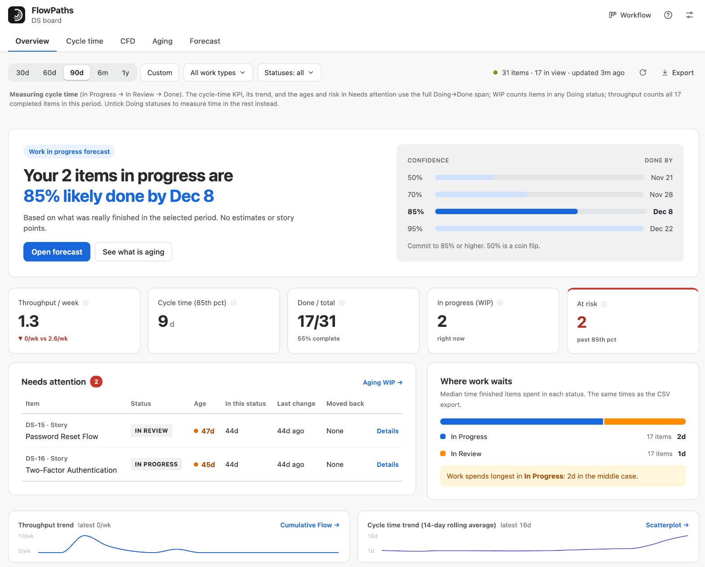

Overview
The big picture in one screen, and what to do about it.
The Overview tab is where most people start each visit. It answers “when will what we have started be done?”, shows the headline numbers, and tells you what needs attention today, without requiring you to read any of the individual charts first.

Work in progress forecast
The top card runs the Forecast for the items currently in progress and says, in one sentence, the date you can be 85% confident they are done by. Beside it, the 50%, 70%, 85% and 95% dates show how much later a safer promise is. Open forecast takes you to the Forecast tab, which starts from the same items.
First visit
The first time you open FlowPaths on a board, a short welcome card shows three steps: check your workflow setup, see what is aging, and get a date you can trust. Got it hides it; this is remembered in your own browser.
Headline KPIs
Five numbers; the ones that can change over time show a trend against the earlier half of your selected date range:
| KPI | What it means |
|---|---|
| Throughput | Items completed per week, averaged across the whole selected period — including weeks where nothing finished. Because it is an average over the window, changing the date range changes it: a longer range covering a quieter stretch shows a lower rate. To see week-by-week variation rather than the average, use the Throughput Run Chart. |
| Cycle time (85th percentile) | 85% of finished items completed in this many days or fewer — your practical delivery-time ceiling. This always describes exactly what you have filtered to, so narrowing to one issue type shows that type’s own figure. |
| Done / Total | Of the items created in the window, how many have reached Done. |
| In progress (WIP) and At risk | How much is currently in progress, and how many of those items are already statistically at risk of running long. The at-risk count needs enough completed work to judge against — it reads “not enough history” until there are 7 finished items. See Aging. |
Throughput and cycle time show a ▲/▼ trend comparing the recent half of your date range against the earlier half, and the two trend lines at the bottom of the page show the same over time — so you can tell at a glance whether things are improving or slipping, not just what the current number is.
"Needs attention"
A ranked list of the open items most likely to slip — pulled from the same at-risk logic used in Aging. This is designed to be actionable: work it top-down in a stand-up or WIP review, rather than reading through the whole board. Each row shows the item’s status, its age, how long it has been in that status, when it last changed and whether it has moved back; Details opens its history. Every at-risk item is listed; a long list scrolls inside the card, with the column headers kept in view.
Where work waits
The median time finished items spent in each Doing status, as one bar split by status. The status where work spends longest is named underneath, because that is usually the first place to look when cycle time is too long. These are the same times as the “time in status” columns in the CSV export.
Measuring a single stage
Untick some of the Doing statuses and the headline numbers change meaning: the cycle-time KPI and its trend, item age and the at-risk count all become the time spent in the statuses still ticked, rather than the whole Doing → Done span. WIP counts only the items sitting in those statuses, and throughput counts only items that passed through them.
Done / total is the exception — it counts the items created in the period whatever path they took. Three numbers moving and one staying put is easy to misread, so that card’s own help says it is unaffected rather than leaving you to guess.
The cycle-time KPI relabels itself to Time in statuses, the “Needs attention” column header changes from Age to match, and a note above the KPIs states exactly what is being measured. Every KPI’s ⓘ describes what that number means under the current selection. See the Statuses dropdown.